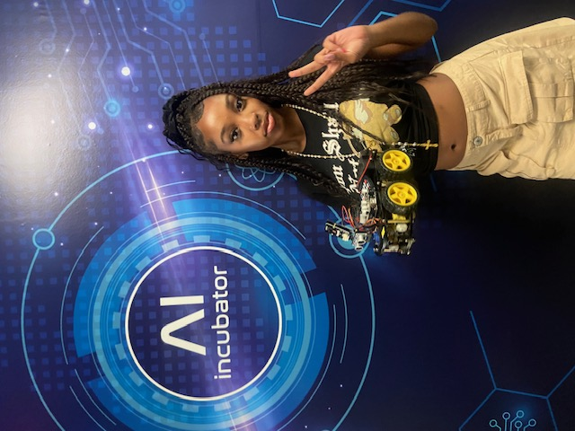

About Me
I am a 11th grader at South Broward. I am in the BC Trio Upward Bound Program. I was born in Florida. I am Bahamian, Haitian, and Native. I enjoy listening to music and watching reality television.
Trio 24 Summer Classes
- American Sign Language
- SAT Reading
- Finacial Literacy
- Robotics and Coding
Projects
ASL Project
Here is my video for ASL
Coding Pictures
Here are my pictures from coding
